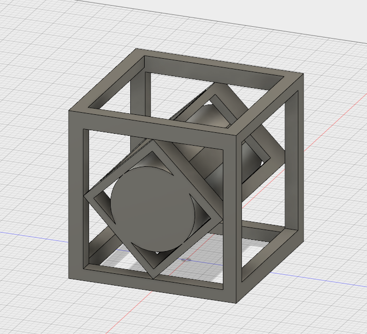
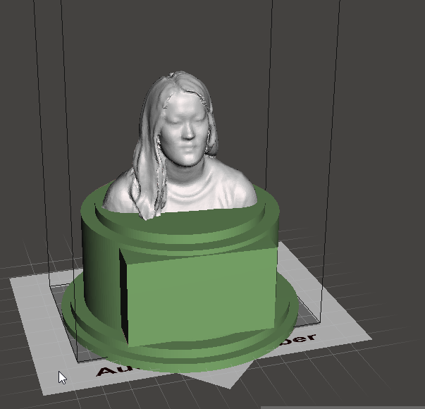
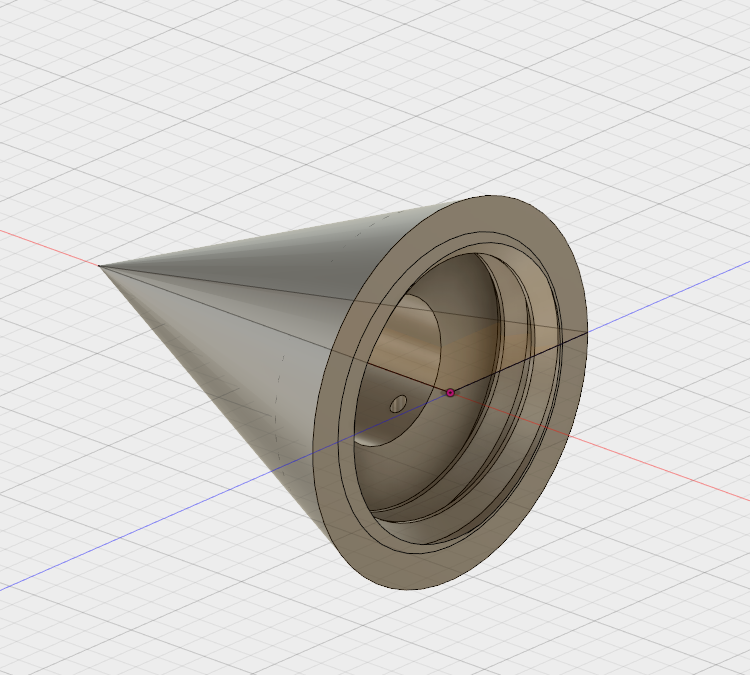

Drip Irrigation, Me 3D Printed, and Restraints
Project Description:
The first project of this unit is to create an object that cannot be made subtractively.I have not printed this out yet, but I
completed the design. I first drew a 3x3 square and extruded it. I selected a face of the square and drew a smaller square on it.
I then extruded the smaller sqaure compelely, so I was left with a hole. I did this process for the other two sides, and the I was
left with a cube. I then used the same method to create a smaller cube inside the orignial cube. To add another surface, I put a
cylinder in the center of the smallest cube.

The next part of this unit is to scan youself and 3D print it. I was scanned by Mr. Gerber, and then I imported
myself into Mesh Mixer. I then desiged my own pdistal, but could not get it to export, so I chose on off of
Thingiverse. I then edidted my bust, and filled in holes. After I edited myself, using the transform tool, I used
the combine tool to attach myself to the base. I do not have mine printed yet, but I hope to upload pictures soon.
For now, here are images of it:

Lastly I made a drip irrigation. It is currently printing, so I will upload a picutre when it is done. This
project was difficult for me becuase it was hard getting the right measurements, and then transferring them to
Fusion 360. I am hoping it fits the watter bottle. I first made a sketch of a right angle triangle. I then used
the revolve tool to create a cone. Then I made a circle on the base of the cone and extruded it. I used the second
circle for a place to add threads. I then did a circle inside the smaller circle, to create a place for the water to
sit, and then extruded a fourth, smaller circle, on the side of the cone, for the water to drip out of.

Restrictions of a 3D Printer:
Eventhough 3d printers can create objects that a milling machine can not, there are still restricitons as to what it can
and can not do. For example, the size of the object you want to print is limited to the size of the platform on the 3d printer. The
base of an object can only be so small, it has to be able to support the rest of the object. Details on an object can not be too refined
becuase the material these printers use are not good for intricate detail. An object's point can only be so big, again because of the
material we 3d print with. If a hole in a design is too small, it might show up clearly on the computer, but after it is printed, the hole
will most likely not be a prevalent.